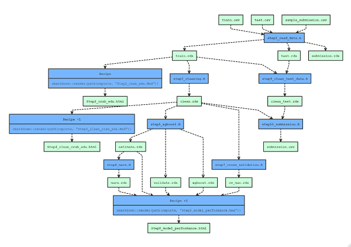

Makefiles are a way of controlling large programming projects. Complex software is typically organised into multiple files of code. Each file requires compilation before the object files are linked together with pre-compiled libraries to create the final executable. When a change is made to one section of the code, it is important to recompile everything affected by that change, but not the code files that are unaffected. A makefile contains a list of all of the code files and libraries together with a set of rules that determine when re-compilation will be needed.
The extension of the idea of a makefile to data analysis is obvious. A data analysis workflow typically involves a complex chain of steps, reading data, preprocessing, fitting models, visualisations, making predictions and so on. A change to one step will necessitate re-running some, but probably not all of the other steps. Manual control of the workflow of a complex analysis would be very error prone, so an R package that does that job would be a really useful tool.
A data analysis makefile also helps enormously with reproducibility. It provides a single script that controls the entire workflow. Run it and you can be sure that every aspect of your analysis is up to date.
As soon as you acknowledge the benefits of makefiles in data science, you will think of more and more things that a workflow management package could do. Perhaps, it could derive the rules for deciding what to re-run, or maybe it could automatically cache intermediate results so as to avoid unnecessary computation. It might provided a visual display of the steps in the analysis and how they depended on one another and it could determine when some parts of the analysis could be run in parallel. I am sure that you will be able to think of other bells and whistles appropriate to the type of data analyses that you work on.
You have a choice, you can either work for five weeks and develop a model with 100% performance on some key metric, or you can stop after one week with a model that gives 80% performance. Which would you pick?
This choice is an example of the widely observed 80/20 rule. You get about 80% of the performance from the first 20% of the effort after which squeezing out the final drops of performance is really hard work.
Of course, the option that you choose will depend on the particular circumstances, do you have the extra time? how important is the extra performance? Accepting that, my inclination is that the simpler solution is usually better, especially when tackling real world, as opposed to academic, problems.
In this post, I want to compare two R package for data analysis workflow management. targets does almost everything that you could ever want, but it is complex and it takes a real effort to learn to use it properly. The other package, makefile, only offers basic workflow management, but it is ultra simple and easy to use. You will not be surprised that my instincts are to prefer the simpler option.
A good source of straightforward test problems is kaggle’s playground series (https://www.kaggle.com/competitions?hostSegmentIdFilter=8). Released about two weeks apart, these tabular datasets offer the chance to try out different modelling techniques and to test their performance against the efforts of other kagglers via the leaderboard. At the time of writing, the playground problem involves a hypothetical dataset simulated to resemble data on crab size and weight. The objective is to develop a model that uses size and weight to predict the crab’s age.
My analysis of these data is designed to illustrate workflow management rather than to win the kaggle competition, so I limit myself to the following ten steps
I’ll compare makepipe with targets as vehicles for organising this workflow. I’ve talked at length and quite favourably about targets in two previous posts, https://modelling-with-r.netlify.app/targets_package/ and https://modelling-with-r.netlify.app/targets_example/, so I will spend most of the time in this post on makepipe.
makepipe is file-based so the ten steps in my analysis will require ten files, seven R scripts and three rmarkdown files. Added to these will be the pipeline.R file itself that takes overall control of the analysis.
Here is my pipeline.R file. Notice that each of the seven R scripts is called by the make_with_source() function and each rmarkdown report is called using the make_with_recipe() function. make_with_recipe() can be used to run any single line of R code. Both functions require the user to specify dependencies i.e. the inputs to that step of the analysis and targets i.e. the outputs produced by that step.
# --------------------------------------------------
# Pipeline for the crab age project
#
library(makepipe)
library(fs)
# --- folders --------------------------------------
cache <- "C:/Projects/Kaggle/Playground/crab/data/cache"
rawData <- "C:/Projects/Kaggle/Playground/crab/data/rawData"
code <- "C:/Projects/Kaggle/Playground/crab/code"
reports <- "C:/Projects/Kaggle/Playground/crab/reports"
# --- step 1: Read the downloaded data -------------
make_with_source (
source = path(code, "step1_read_data.R"),
dependencies = c(path(rawData, "train.csv"),
path(rawData, "test.csv"),
path(rawData, "sample_submission.csv")),
targets = c(path(cache, "train.rds"),
path(cache, "test.rds"),
path(cache, "submission.rds")) )
# --- step 2: EDA report ---------------------------
make_with_recipe (
recipe = rmarkdown::render(path(reports, "step2_crab_eda.Rmd")),
dependencies = path(cache, "train.rds"),
targets = path(reports, "step2_crab_eda.html"))
# --- step 3: clean training data -------------------
make_with_source (
source = path(code, "step3_cleaning.R"),
dependencies = path(cache, "train.rds"),
targets = path(cache, "clean.rds"))
# --- step 4: EDA of clean data report --------------
make_with_recipe (
recipe = rmarkdown::render(path(reports, "step4_clean_crab_eda.Rmd")),
dependencies = path(cache, "clean.rds"),
targets = path(reports, "step4_clean_crab_eda.html"))
# --- step 5: xgboost model -------------------------
make_with_source (
source = path(code, "step5_xgboost.R"),
dependencies = path(cache, "clean.rds"),
targets = c(path(cache, "estimate.rds"),
path(cache, "validate.rds"),
path(cache, "xgboost.rds")) )
# --- step 6: mars model ----------------------------
make_with_source (
source = path(code, "step6_mars.R"),
dependencies = path(cache, "estimate.rds"),
targets = path(cache, "mars.rds") )
# --- step 7: cross-validation ----------------------
make_with_source (
source = path(code, "step7_cross_validation.R"),
dependencies = path(cache, "clean.rds"),
targets = path(cache, "cv_mae.rds") )
# --- step 8: modelling report ---------------------
make_with_recipe (
recipe = rmarkdown::render(path(reports, "step8_model_performance.Rmd")),
dependencies = c(path(cache, "estimate.rds"),
path(cache, "validate.rds"),
path(cache, "xgboost.rds"),
path(cache, "mars.rds"),
path(cache, "cv_mae.rds")),
targets = path(reports, "step8_model_performance.html"))
# --- step 9: clean test data ---------------------
make_with_source (
source = path(code, "step9_clean_test_data.R"),
dependencies = c(path(cache, "train.rds"),
path(cache, "test.rds")),
targets = path(cache, "clean_test.rds") )
# --- step 10: submission ------------------------
make_with_source (
source = path(code, "step10_submission.R"),
dependencies = c(path(cache, "clean.rds"),
path(cache, "clean_test.rds")),
targets = path(cache, "submission.csv") )The objective here is concentrate on makepipe rather than the analysis, so I will not give details of all ten scripts. However, I have put them on my GitHub pages (https://github.com/thompson575/crab).
When pipeline.R is run, the makepipe package will consider each make_with_source() or make_with recipe() in turn. In particular, it will consider the date-time stamps of the source code, the dependencies and the targets. If the targets are not more recent than the code and dependencies, then the step needs to re-run.
The code below runs pipeline.R and finds that everything is up to date and so does not need re-running. It then plots a diagram of the workflow pipeline.
source("pipeline.R")## ✔ Targets are up to date
## ✔ Targets are up to date
## ✔ Targets are up to date
## ✔ Targets are up to date
## ✔ Targets are up to date
## ✔ Targets are up to date
## ✔ Targets are up to date
## ✔ Targets are up to date
## ✔ Targets are up to date
## ✔ Targets are up to dateshow_pipeline()
As an illustration of the way that I write my code, I will show the R script for reading the downloaded data and saving it in rds format. The input files are provided in csv format. Each one is read, converted to a tibble and saved to my cache. Then the rds files are copied to my archive for permanent storage (see https://modelling-with-r.netlify.app/filearchive/). In the pipeline.R file the three csv files are specified as dependencies and the three cached rds files are the targets. When pipeline.R is sourced, the date-times of the files determine whether the step needs re-running.
This file is presented because it shows how makepipe dovetails neatly with my style and it also forms a baseline for the changes that I need to make to run targets.
# --------------------------------------------------------------
# Read the data files for the kaggle playground problem on
# predicting crab age
#
library(tidyverse)
library(fs)
library(fileArchive)
library(janitor)
rawData <- "C:/Projects/Kaggle/Playground/crab/data/rawData"
cache <- "C:/Projects/Kaggle/Playground/crab/data/cache"
archive <- "C:/Projects/Kaggle/Playground/crab/data/repos"
# --------------------------------------------------------------
# Read training data, clean names and save in the archive
#
read.csv( path(rawData, "train.csv")) |>
clean_names("lower_camel") |>
saveRDS( path(cache, "train.rds"))
copyToArchive(archive, path(cache, "train.rds"),
name="train",
tag="crab training data",
replace=TRUE)
# --------------------------------------------------------------
# Read test data, clean names and save in the archive
#
read.csv( path(rawData, "test.csv")) |>
clean_names("lower_camel") |>
saveRDS( path(cache, "test.rds"))
copyToArchive(archive, path(cache, "test.rds"),
name="test",
tag="crab test data",
replace=TRUE)
# --------------------------------------------------------------
# Read sample submission and save in the archive
#
read.csv( path(rawData, "sample_submission.csv")) |>
saveRDS( path(cache, "submission.rds"))
copyToArchive(archive, path(cache, "submission.rds"),
name="submission",
tag="crab sample submission",
replace=TRUE)The key idea of targets is that the steps in the analysis are placed in separate functions not files. When this is done the targets package automatically determines the dependencies and it automatically caches the intermediate results.
Automatic caching of intermediate results duplicates some of my standard workflow, so to make best use of targets I need to need to make my whole approach more targets-like.
An R function can only return a single object, so it makes sense to have three functions, one for each input file. I show the function for reading the training data. I could either return the tibble of training data and let targets cache it for me, or I could return a reference to the archived file. The former is more targets-like, but the latter is closer to my personal style. The code below takes the file reference approach.
# --------------------------------------------------------------
# Read the training data file for the kaggle playground problem on
# predicting crab age
#
read_train <- function(train_file) {
library(tidyverse)
library(janitor)
cache <- "C:/Projects/Kaggle/Playground/crab/data/cache"
archive <- "C:/Projects/Kaggle/Playground/crab/data/repos"
# Read training data, clean names and save in my archive
read.csv( train_file) |>
clean_names("lower_camel") |>
saveRDS( path(cache, "train.rds"))
copyToArchive(archive, path(cache, "train.rds"),
name="train",
tag="crab training data",
replace=TRUE)
# return name of the archive file
return( path(archive, "train.rds") )
}Now the _targets.R file needs to tell targets that read_train() returns a file reference.
# ----------------------------------------------------------
# crab analysis
library(targets)
library(tarchetypes)
library(fs)
rawData <- "C:/Projects/Kaggle/Playground/crab/data/rawData"
code <- "C:/Projects/Kaggle/Playground/crab/code"
train_file <- path(rawData, "train.csv")
# ----------------------------------------------------------
# list of the steps in the computation
list(
# reference to training csv file
tar_target(file1, train_file, format = "file"),
# reference to the archived file
tar_target(train, read_train(file1), format = "file"),
)targets will deduce that the csv file is a dependency of read_train() and the archived rds file is the target.
Adapting targets to work with my standard file-based style is somewhat artificial. In truth, it makes more sense to accept targets what it is and to adapt your analysis style accordingly. My previous posts show how to use targets in this conventional way (https://modelling-with-r.netlify.app/targets_package/ https://modelling-with-r.netlify.app/targets_example/).
makepipe is very basic, but it suits my preferred way of working. I am able to develop my data analysis as a series of R scripts and rmarkdown reports and when I am ready, I create the pipeline.R file that controls the full analysis. makepipe is not very intelligent, it will not deduce the dependencies or targets of a particular step; that job is left to me. It will not cache intermediate results; that job is also left to me. makepipe certainly does not have any of the advanced features of targets, its main advantage is simplicity and that suits me just fine.